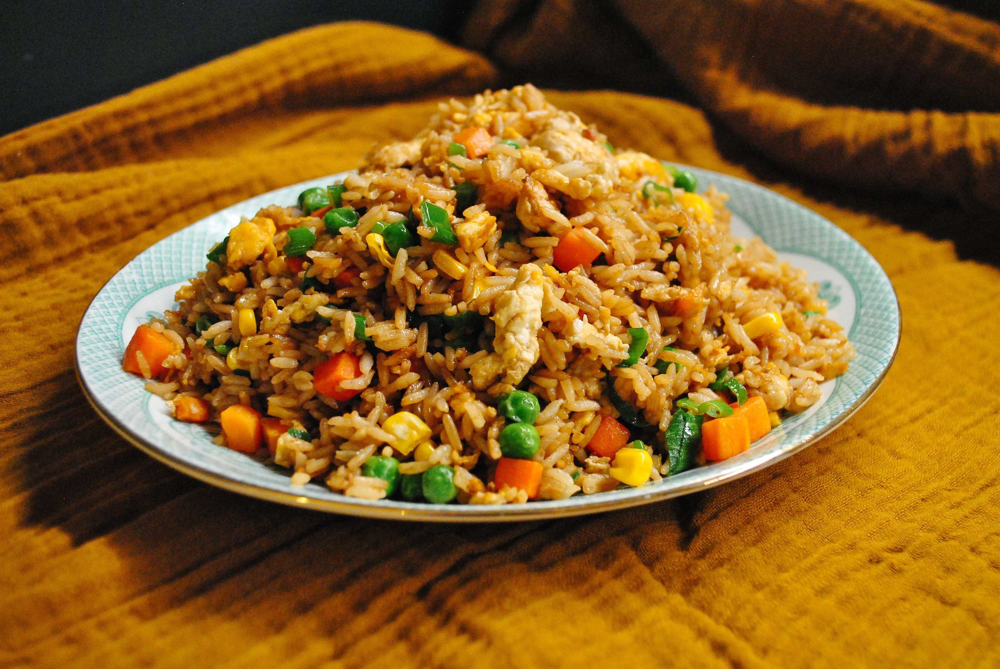

Fried Rice

Description
Classic Asian Leftover Dish. Delicious, Fast and Easy.
Ingredients
- Leftover Rice
- Spring Onion
- Vegetables: Peas, Carrots, Corn (optional)
- 2 Eggs
- Protein: Chicken, Pork, Beef, Sausage (optional)
- Garlic
- Salt/MSG, Pepper, Soy Sauce
Steps
- Beat the egg until smooth, salt the egg and meats, and dice vegetables
- Half sautee the protein and vegetables (save spring onion), then set them aside
- Add garlic, and once it turns golden, add the rice
- Break the rice up if clumpy, and add the egg, and stir fry until the egg is cooked and spread evenly amongst the rice
- Add back the protein and rest of the vegetables, stir fry until fully cooked
- Season with soy sauce and stir fry evenly into the rice
- Add in the spring onion and fry for another 30 seconds, then serve